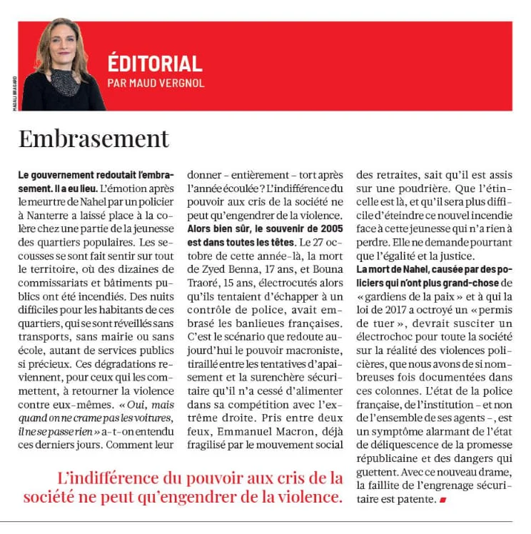

Publication d’archives
L'indifférence du pouvoir aux cris de la société ne peut qu'engendrer de la violence.
Date indiquée par Facebook · 30 juin 2023
Texte conservé avec la publication
L'indifférence du pouvoir aux cris de la société ne peut qu'engendrer de la violence.
Éditorial par Maud Vergnol
@L'humanité

Sources
Archive rouge · export Facebook · AR-0002-FB-01620
À lire aussi · Avril 2024 : Pierre Barros répond aux restrictions de grève